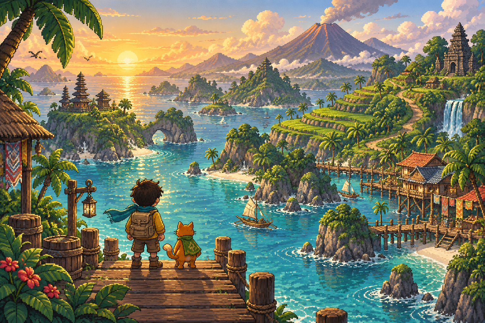

PETUALANGAN SANTAI · DUNIA TERBUKAJalan pelan.
Jalan pelan.
Temukan cerita.
Dari hangatnya kampung sampai ujung ombak.
Ranselmu siap. Nusantara menunggumu.
07 wilayah untuk dijelajahi06 teman perjalanan04 tantangan kecil
KEPULAUAN NUSANTARA↗ N

Ke mana langkahmu hari ini?01 — 07
✦
Tak perlu terburu-buru.
Setiap langkah punya cerita.
NUSANTARA✳JELAJAH • TEMUKAN • KENANG
KENALI TEMAN PERJALANANMU
Cerita dimulai bersamamu.
Teman baru terbuka seiring perjalanan. Pilih kartu untuk mengenalnya.
Perjalananmu akan tetap tersimpan.